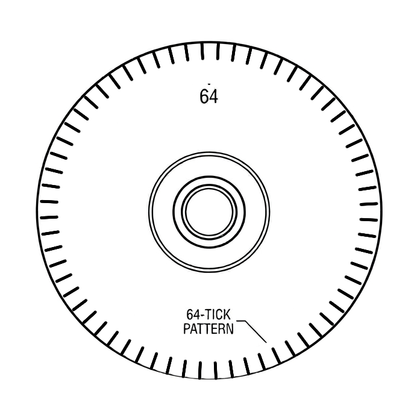

So far you’ve learned how to move a motor relative to its max speed/power, but this doesn’t give us any information about how fast the motor is spinning, or how far it’s spun. This is what we use encoders for. Encoders are a type of sensor that tracks the rotation of a motor.

A rotary encoder has a disk with ticks on it that gets rotated as the motor moves. The number of ticks that are counted out of the total tells the encoder how much the motor has spun. For example, this encoder disk has 64 ticks, so if the encoder has counted 16 ticks it can tell you the motor has spun ¼ of a rotation, which is π/2 radians.
There are two main types of rotary encoders: absolute and relative.
NOTE: relative encoders don’t wrap, so 360 degrees is 360 degrees, 480 is 480, etc. However, absolute encoders do, so 360 degrees rolls over back to 0 and 480 to 120.
Relative encoders are useful when you need something like distance traveled or velocity like in a drivetrain or shooter. Absolute encoders are useful when you need the current rotation of something like the location of a turret.
We can get an encoder object in code using one of these methods on the motor controller:
getEncoder()
This is the internal relative encoder that is built into most motors.
getAbsoluteEncoder()
This is an absolute encoder that is built into the motor. This method will only work on some motors like those in SwerveModules that have absolute encoders built into them.
getExternalEncoder()
This refers to an encoder that is wired up to the motor rather than built in. This may be either relative or absolute.
If the encoder is relative it’ll be an instance of the RelativeEncoder class. If it’s absolute it’ll be an instance of the AbsoluteEncoder class.
SparkMax motor = new SparkMax();
RelativeEncoder encoder = motor.getEncoder();
In order to get the reading from a motor you can use either getPosition() or getVelocity(). getPosition() will return the position of the motor in rotations. getVelocity() will return the velocity of the motor in rotations per minute.
double position = encoder.getPosition();
However, you might recall that our team doesn’t use rotations, we use radians. We can edit the units that getPosition() and getVelocity() return with the config for our motor controller.
SparkMax motor = new SparkFlex();
SparkMaxConfig config = new SparkFlexConfig();
config
.idleMode(IdleMode.kBrake)
.smartCurrentLimit(60);
config.encoder
.positionConversionFactor(2*Math.PI);
motor.configure(config, true, true);
RelativeEncoder encoder = motor.getEncoder();
Since 1 rotation = 2π radians, multiplying by a conversion factor of 2π converts the encoder value from rotations to radians. We can also use .velocityConversionFactor() to set the conversion factor for velocity:
config.encoder
.positionConversionFactor(2*Math.PI)
.velocityConversionFactor((2*Math.PI)/60);
This will convert the velocity from rotations per minute to radians per second.